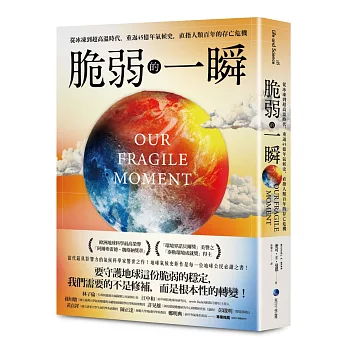
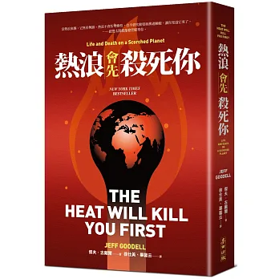
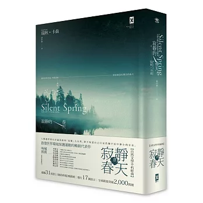
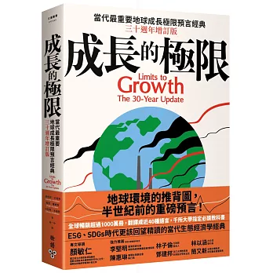
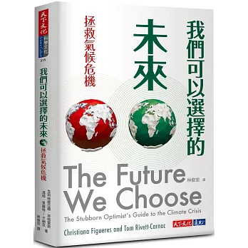

主題讀書會
從本展選書出發，一起討論氣候、生活，以及我們能選擇的未來。
活動詳情即將公布國立政治大學圖書館｜永續書影展
在失衡的地球上，重新學習生活
從氣候、生態、消費到政大校園，透過書籍、影片與互動，重新思考我們如何生活，以及我們想共同選擇什麼樣的未來。
START HERE
第一次來到這裡？從下面四個入口開始，依你想看的內容直接進入展覽。
PROGRAMS
除了閱讀與觀看，也一起坐下來談、一起玩。展期內將搭配主題讀書會與永續桌遊工作坊。
從本展選書出發，一起討論氣候、生活，以及我們能選擇的未來。
活動詳情即將公布從遊戲中的資源、選擇與取捨，體驗永續為什麼很少只有一個標準答案。
活動詳情即將公布最新活動時間、地點與報名方式，以政大圖書館公告為準。
EXHIBITION PROPOSITION
未來不是等待到來的結果，而是由我們今天的選擇逐步形成。
三個訊號，彼此牽動，也正在改變我們生活的條件。
氣溫正在上升。
持續升溫讓乾旱更久、野火更容易發生，也讓我們的生活與生態系統面臨更高風險。
冰川正在消融。
中低海拔原本覆雪的區域逐漸轉為綠地與裸岩，只剩高處殘存少量積雪；融冰也正在改變水資源與地貌。
物種正在消失。
棲地破碎、氣候改變與人類活動的壓力交疊，使許多物種面臨更高的生存風險，生物多樣性也持續下降。
這不是三條彼此分離的新聞，而是同一個系統裡相互牽動的訊號。
CURATORIAL STATEMENT
永續不是拯救地球的口號，而是在氣候、生態與資源秩序正在改變的此刻，重新選擇我們如何生活、消費、生產，以及與其他生命共存。
這場展覽沒有提供一張通往未來的標準答案。我們邀請你從地球漫長的氣候史出發，看見正在發生的改變，重新思考人與自然的關係，再回到一個最簡單、也最困難的問題：如果未來仍然可以被選擇，我們想留下什麼樣的世界？
01 / THE UNBALANCED EARTH
地球經歷過冰凍、酷熱、滅絕與重生。
地球從來不是一成不變。四十五億年的氣候史裡，冰期與暖期反覆交替，海洋、森林與物種也隨之更迭。
然而，今日氣候變化的速度與人類活動的規模，使我們第一次必須在短短數代之內面對全球性的氣候風險。
我們需要理解的，不只是變暖，還有風險。
READ THE QUESTION從這些作品開始
01
地球曾經歷劇烈變化；這一次，人類也成為改變氣候的力量。
02
當氣候改變，人類文明也跟著重新排列。
03
如果未來存在不確定性，我們還需要現在就行動嗎？

02 / CLIMATE COMES HOME
氣候變遷可能是一場提前到來的熱浪、一片失控的野火、一條逐漸退縮的冰川。當極端事件越來越頻繁，氣候問題便從「未來可能發生」，轉變成「此刻正在發生」。
氣候，終究會回到人的生活裡。


03 / MORE-THAN-HUMAN WORLD
談永續時，我們往往先想到如何讓人類繼續生活得更好；但一座城市、一條道路、一片森林與一座湖泊，從來不只屬於人類。

SPECIAL CHAPTER / NCCU
你以為自己只是在校園裡。其實，你正站在一座生態系統之中。永續不是發生在遠方，它也正在政大的森林、溪流、建築與日常選擇裡發生。
從教室走向圖書館的幾分鐘裡，有鳥掠過樹梢，有蝶類穿過草地，也有一些你可能從未見過的生命，正與我們共享這片土地。
先別急著看數字。猜一猜，這座校園究竟容納了多少生命、多少碳，也正在產生多少再生能源。
依「三貓生態大踏查」等資料，政大範圍可見的植物、哺乳類、鳥類、兩棲類、爬蟲類與蝶類合計 153 種；其中也包括穿山甲、食蛇龜與臺灣藍鵲等物種。
校內約 60 公頃林地與山坡地，估計總碳儲存量約 106,982 公噸，每年還可固碳約 1,258 公噸。當你坐在樹蔭下，它也正在為未來工作。
2025 年政大全校太陽光電實際發電量為 673,371.10 度，其中達賢圖書館約 61,579 度。建築不只消耗能源，也能成為能源轉型的一部分。
ONE MORE QUESTION
《2025 政大永續報告書》將「達成校園碳中和」列為 2048 長程目標。但永續政大不只是一個碳數字，也包括能源、資源循環、生態、校園韌性與生活方式。
NCCU SUSTAINABILITY SNAPSHOT
資料來源：國立政治大學《2025 永續報告書》。
A CLOSER LOOK: DAH HSIAN
達賢不是永續政大的全部，而是一個可以被看見、被觸摸的案例：湖水、玻璃、能源、草坡與其他生命，都在這裡交會。
04 / THE LOOP
真正的永續，也許不是把原本的生活方式「做得更綠」，而是重新思考我們究竟需要多少，以及什麼才算值得追求的富足。
《成長的極限》 / 《甜甜圈經濟學》
《垃圾之書》 / 《從搖籃到搖籃》 / 《循環經濟》
《永續時尚》 / 《別讓地球碳氣》 / 《世界又熱、又平、又擠》

價格很便宜，
不代表沒有代價。
05 / ANOTHER FUTURE
知道問題之後，下一步並不是尋找唯一的標準答案。科技創新、能源轉型、城市設計、公共政策、企業責任與個人行動，都可能是改變的一部分，也都伴隨成本與取捨。

ABOUT THE EXHIBITION
CURATORIAL NOTES
本展從氣候科學、生態倫理、消費與經濟、城市治理與永續行動等面向選書，並將圖書、影片與政大校園重新組成一條「理解問題 → 看見衝擊 → 重新定位人類 → 質疑既有模式 → 尋找改變路徑」的閱讀路徑。
YOUR TURN
這五題不是要測你「夠不夠永續」，而是把永續裡常被忽略的取捨攤開來看。每做一個選擇，也問問自己：誰得到好處？誰承擔代價？代價發生在現在，還是未來？
便利、舒適與效率，最後主要服務了誰？
成本是否被轉嫁給環境、其他生命或較弱勢的人？
今天省下的成本，會不會成為下一代要處理的風險？
永續不一定只能二選一。有時更重要的是重新設計制度、空間、工具或流程，讓衝突變小、讓代價下降。
舒適 × 節能
夏天降低室溫能增加舒適度，但也意味著更多能源使用。
採光 × 生態
大片玻璃帶來明亮的室內與開闊景觀，卻也可能增加鳥類碰撞的風險。
便利 × 消耗
外帶餐飲、活動物資與一次性包裝帶來便利，也成為校園資源循環的一部分。
科技 × 生活方式
政大持續推動能源管理、再生能源與數位監控；當設備變得更有效率，生活方式是否也需要改變？
現在 × 未來
政大的長程目標是 2048 校園碳中和。要走到那裡，現在應該承擔多少成本，又如何讓轉型更公平？
YOUR FIVE CHOICES
這不是分數，也不是人格分類。把五個答案並排看，會更容易看見：永續往往不是單一價值的選擇，而是如何分配代價與責任。
沒有標準答案。真正重要的是：當不同價值衝突時，我們願不願意看見代價，並繼續尋找更好的設計。
LEAVE ONE CHOICE
今天的回答不會立刻改變世界。
但每一個未來，都從一個選擇開始。
掃描 QR Code，留下你的想法。
留下我的選擇 →回覆採匿名方式；是否同意公開引用可由你自行選擇。
本表單不蒐集姓名、電子郵件及其他個人識別資訊。
用手機掃描，留下你的選擇